Device Search
The Device Search is used for searching across all the IoT devices. This section provides a way for the user to search/query the devices based on below device fields:
- Device name
- Firmware
- Status
Below are the features it offers:
Search Devices
A user can use this feature to search devices. The search is done by adding one or more query conditions using the device fields, an operator and a value. The device search is independent of their device groups and the results can be downloaded. Below are the steps:
Go to Device Search page
After navigating to the Device search page add one or more conditions.
- Click on Add condition
- Select the field. Example: Device Name
- Select the operator. Example: Contains
- Enter the Value. Example: test 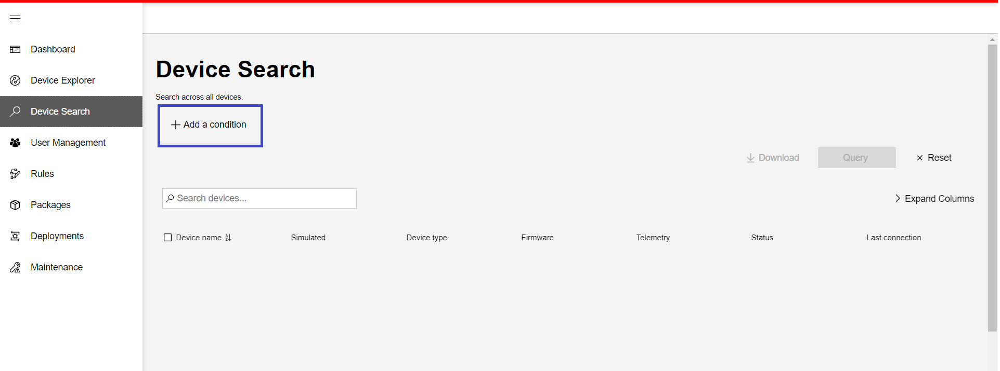 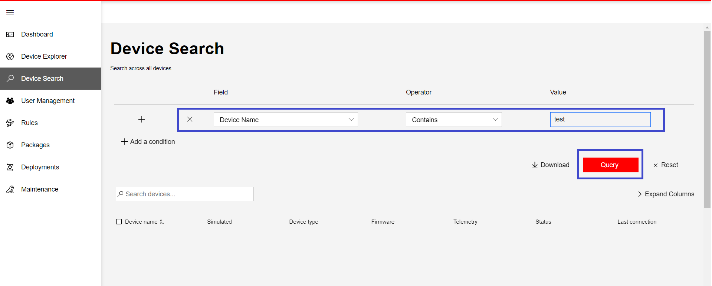
To add more conditions, repeat 1-4 from previous step. 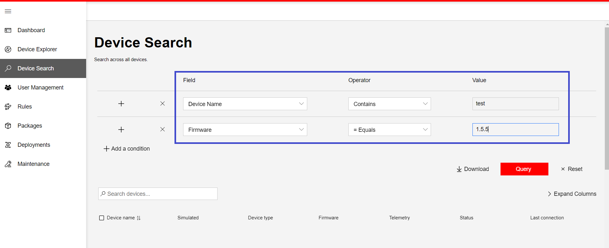
A condition once added can also be removed 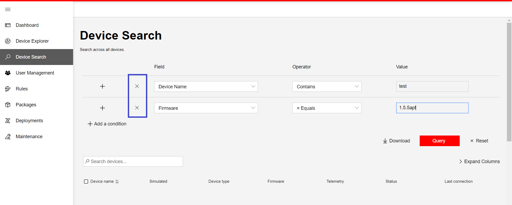
Once the conditions are added, click on Query button 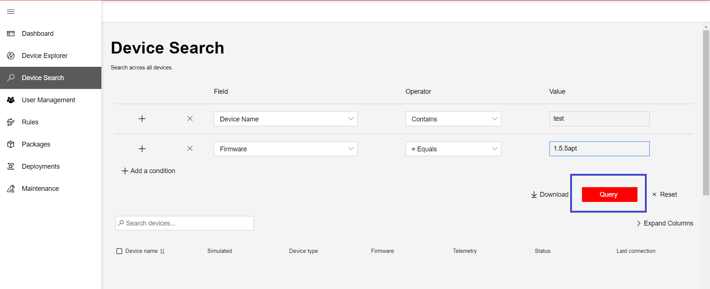
The results are displayed in a grid. The following lists the columns and their usage in the Device Search grid 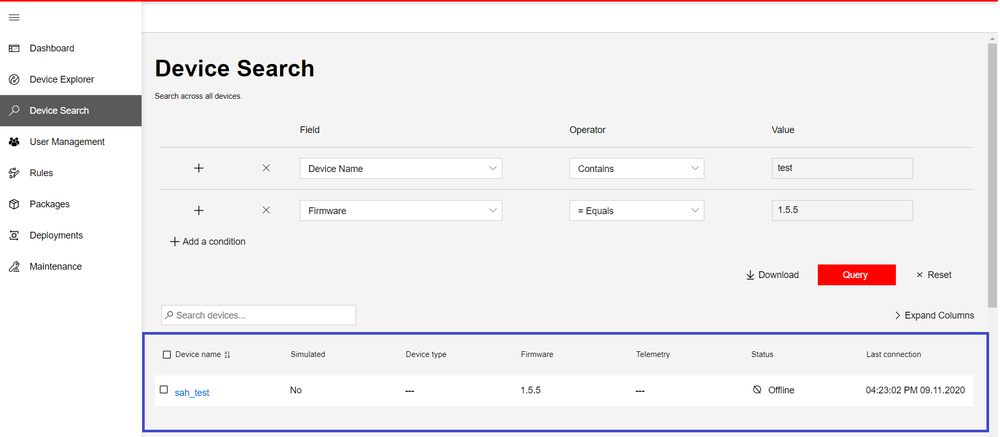
Column Name Description Device Name Name of the Device Simulated Indicates whether device simulation is on or off Device Type Describes the type of device Firmware Latest device firmware version Telemetry Schema of the telemetry Status Indicates whether the device is connected to the Azure IoT hub Last Connection Last date when a device connected to Azure IoT hub We have a search bar associated with the grid where we can filter the grid data. 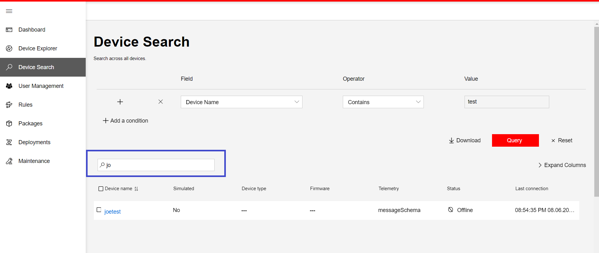
Reset button resets the added conditions and clears the search results
Download the Results
Download button is available for downloading the Device search results. On clicking this button, the results are downloaded in the form of a spreadsheet.
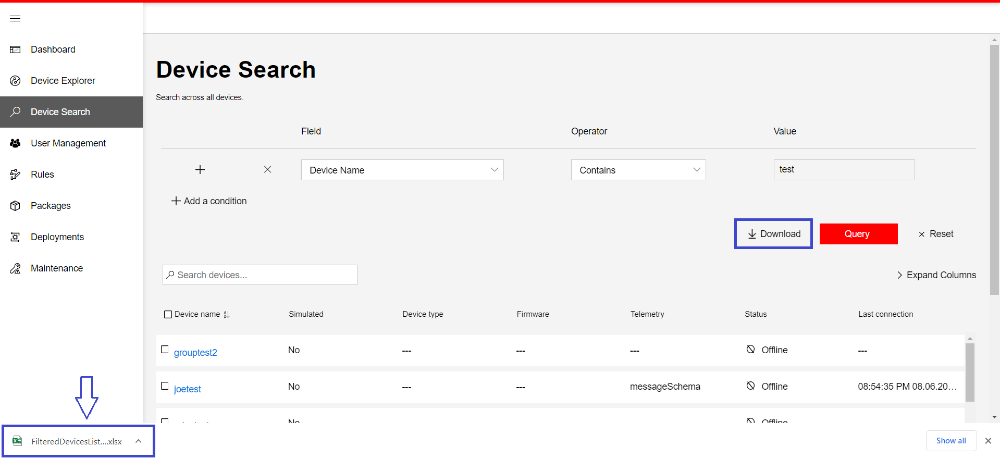
Device Details
The Device Details panel displays information about a device such as telemetry, tag values, the methods it supports, and the properties reported by the device.
Once the device search is done, click on the device name in the results grid. It will open the Device Details panel. This is the same device details panel which is seen in Device explorer page.
Below are the details the Device Details panel provides.
Alert Grid
- The grid will be displayed when alerts are observed for a device.
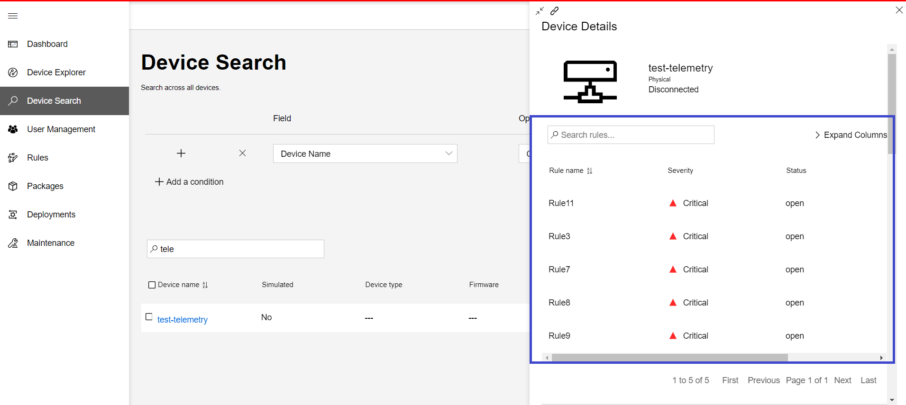
Telemetry
Tags
Methods
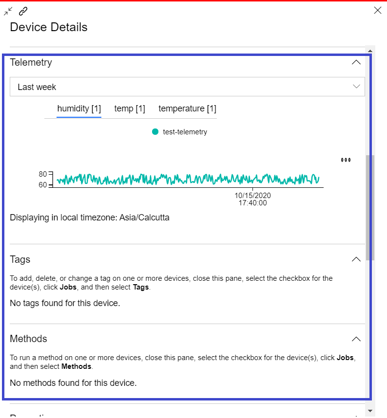
Properties
Diagnostics

Deployment messages
- Edge module messages on the device.
Device Uploads
- File Uploads from the device.
Device Deployments
- Deployment history of the device.
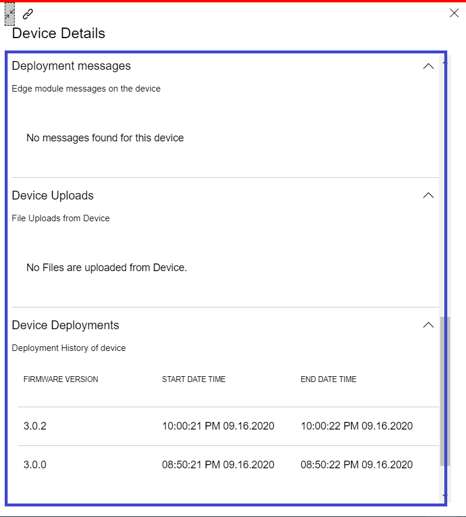
Delete Device
Devices that are no longer needed or in use can be deleted.
Steps to delete a device:
Select one or more devices by clicking on the checkbox to the left of the device name in the search results grid.
After selecting devices the 🗑️Delete button will be visible in the toolbar; click Delete.
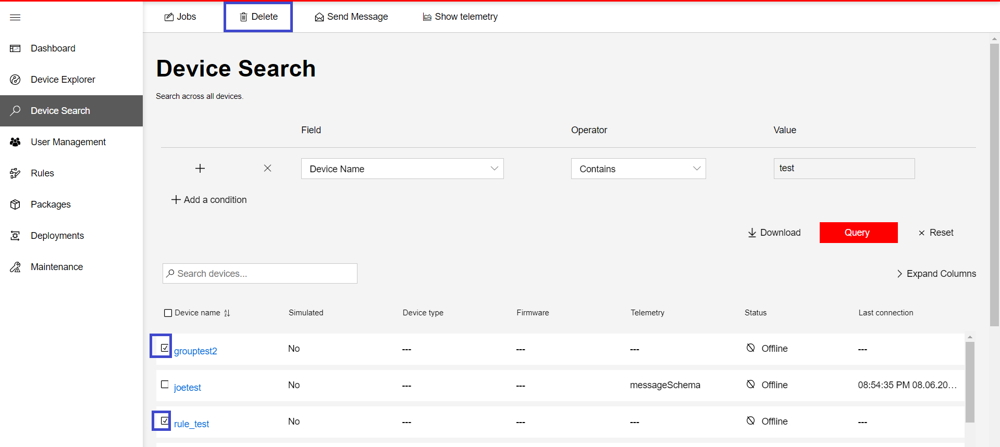
Click on the toggle button to delete the device(s) and the Delete button will be activated.
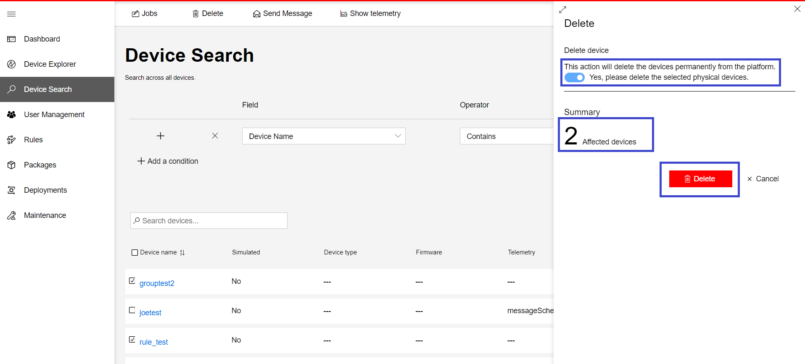
After deleting the device(s) you will see a message that the device(s) have been deleted and the device details removed from the Device Explorer grid.
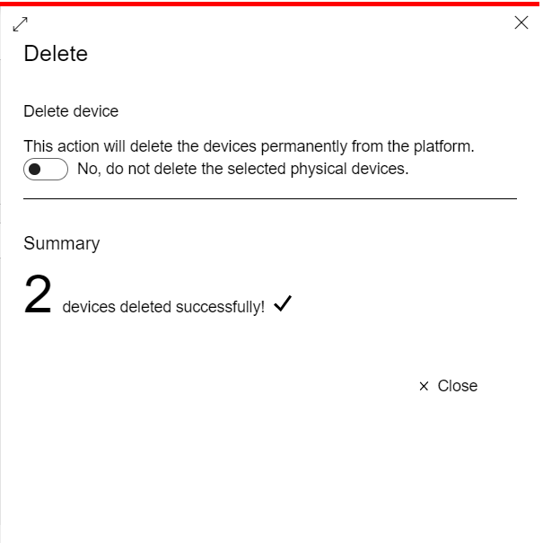
Configure a Device
The Device Search grid also allows updating device properties similar to Device Explorer page. Below are the steps:
Once the search results are displayed, select a device by clicking on the check box to the left side of the device name in the grid. The click the Jobs button in the toolbar.
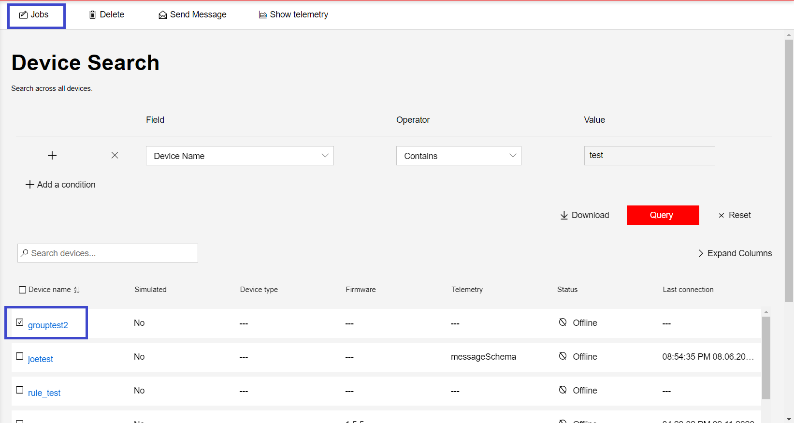
The Jobs panel opens up, select Properties.
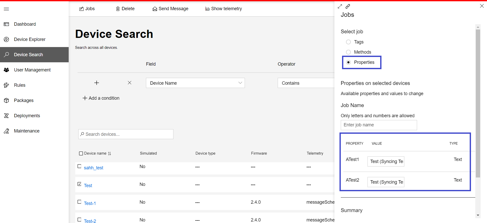
The Jobs panel shows the updateable property values for the selected device.
To update the device properties, set the Job Name in the text box, update the properties value(s), and click Apply.
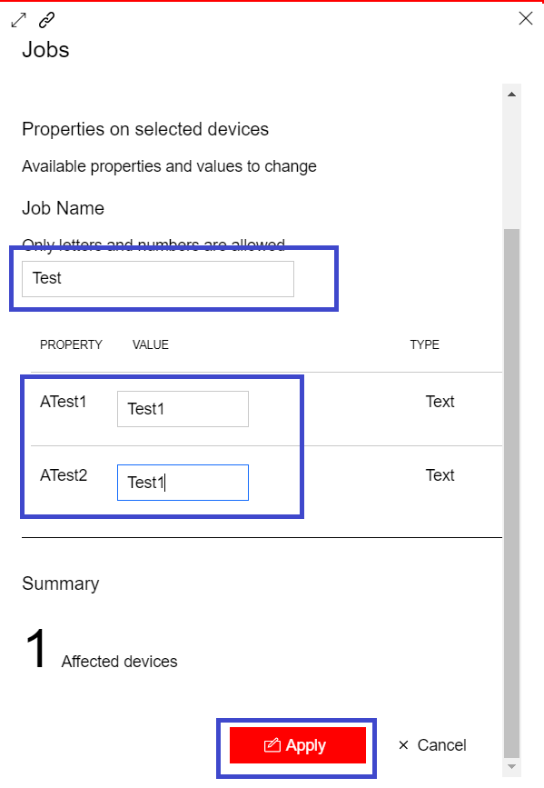
- To track the status of the job, click View job status.
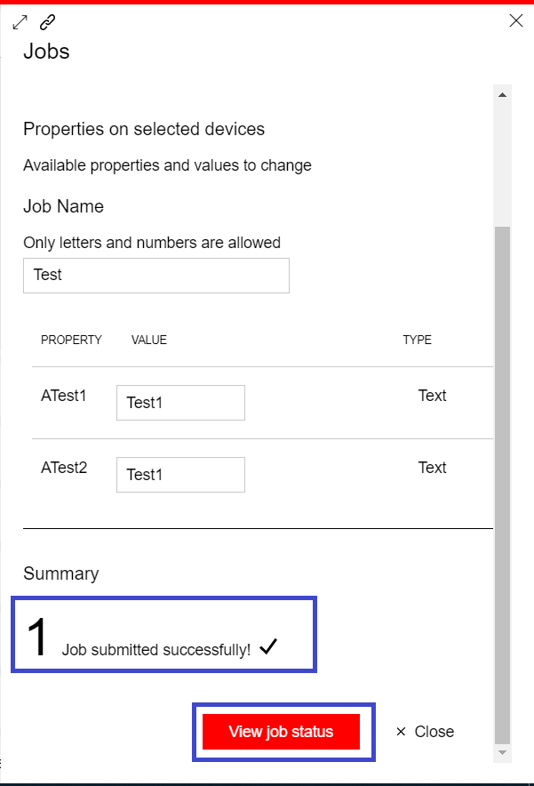
After the job completes, navigate to the Device Explorer and verify the updated properties details in the device details panel under the Properties section.
Note:
The job status does not show live status, to refresh the status click the refresh button.
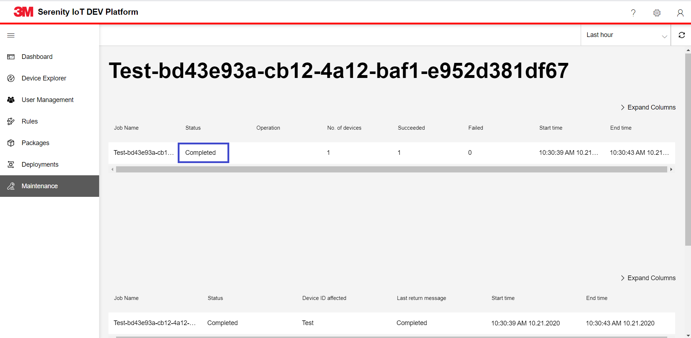
More
Device Search grid also provides a few more features, listed below:
- Show telemetry
- Send Message
Show telemetry
The Show telemetry page is useful to show one or more devices' telemetry on a separate page.
Select one or more devices in the grid and click the Show telemetry button.
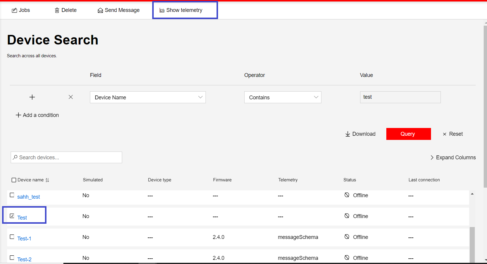 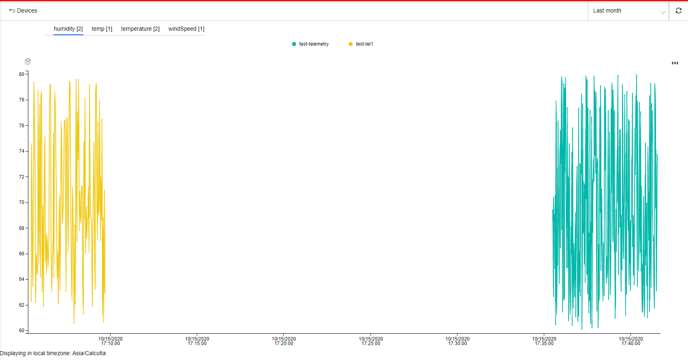
Send Message
TODO